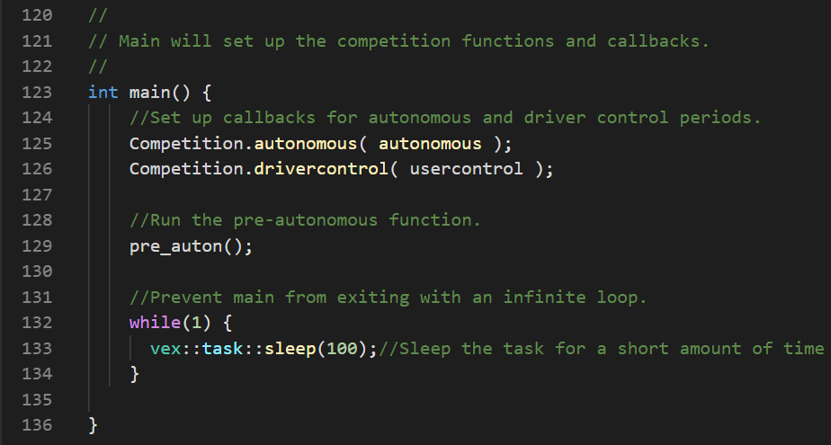

Robotics
SBHS VEX EDR Team 750
Head Programmer for SBHS Robotics Team 750R (2018 - 2019)
Head Programmer for SBHS Robotics Team 750W (2019 - 2020)
Head of Marketing for SBHS Robotics
2018 - 2019 Season
Each year, VEX Robotics puts out a different game to challenge the minds and skills of high school students across the world. This year's VEX Robotics competition, Turning Point, revolved around flipping caps and shooting flags to score points for your own alliance. For the 2018-2019 season, my team, 750R, was composed of 9 high school students with a incredible passion for engineering that allowed us to qualify for the VEX World Championships in Louisville, KY.
Competitive Role
As the head programmer for 750R, I was tasked with writing the code that allowed the robot to function both autonomously and with driver input. I used a variety of tools, including VEX Coding Studio, the VEXcode IDE, and the PROS API developed by Purdue Univeristy's VEX U team for both the V5 systems and the VEX ARM Microcontroller.
Autonomous
Each match of Turning Point begins with a 15 second autonomous period, during which robots must score as many points without any driver input. Over the course of the season, 750R developed eight separate autonomous protocols - 2 for each starting tile, one that parked on the platform and one that did not. The idea behind this was 'versatility:' we wanted to give ourselves the best possible position in autonomous regardless of our alliance's or opponents' abilities. With eight possible autonomous functions, we can consistently win autonomous bonus without worrying about any of the other robots on the field.
Descore
A crucial part of our autonomous protocols is what the team likes to call 'descore.' In mid-season, we realized that most teams with flag-side autons started off by scoring the closest row of flags, and that a team that could descore those flags would be in a much better position to win autonomous bonus. Therefore, 750R created the 'descore auton,' a far-side autonomous protocol that waits until the absolute last second to descore the opponent's flags, thereby securing them in our favor. As far as we know, 750R was the first team to implement such an idea successfully in New Jersey, with many others following suit.
Programming Skills
Besides matches, VEX tournaments also have what's called robot skills, which is a way for teams to show their skills in driving and programming by scoring as many points as possible in 60 seconds without any other teams on the field. For this year, 750R developed an 18-point programming skills path, giving the team the 2nd highest programming skills in New Jersey and the 4th highest robot skills in New Jersey. This also allowed us to qualify for the World Championships, as both 750R and 2616J had a robot skills of 42 but the deciding factor in who progressed to the international stage was highest programming skills.
Outside of Competitions
Website
As head programmer for 750R, I also took the initiative to create a website to document the team's journey throughout the season. However, competitions took up most of my time, and unfortunately, the website is not finished as of yet. Click here to visit the 750R website.
Marketing
As head of marketing for the entire club, I lead a team of highly motivated students to manage and maintain marketing and sponsorship relations for 750. The group regularly holds calls and meetings to discuss plans for events, both upcoming and in the future.
Sponsorships
To finance the costly trip for the World Championships, the marketing team searched for sponsors who were willing to join our community and support our teams in their STEM endeavors. We were able to raise over $2000 in sponsor money, bringing the cost per student down by over $100.
If you are interested in becoming a sponsor, please contact me at mihirlaud@gmail.com. You can also view our sponsor packet here, and our sponsorship tiering here.
Special thanks to our platinum sponsor!